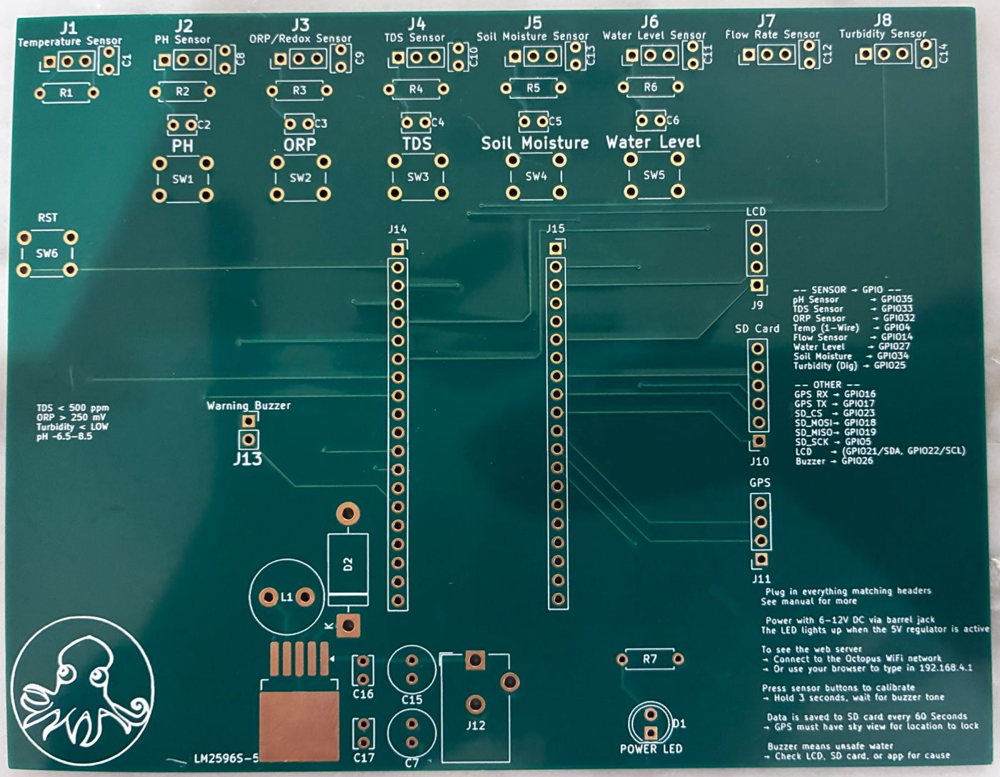
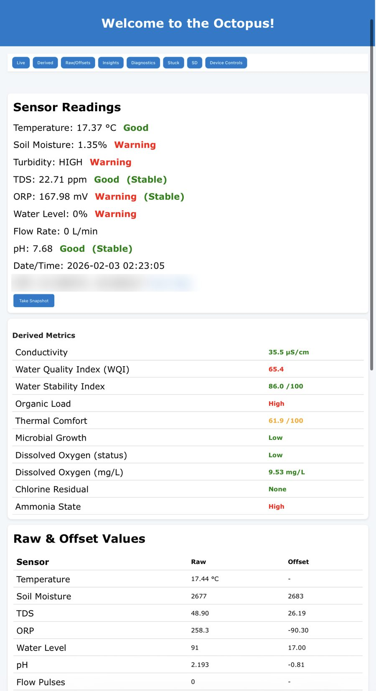

The Octopus
Modular water quality monitor · 2024–present
Hurricane Helene rerouted rivers across the Appalachian Mountains and washed sediment and chemical runoff into water supplies, including in the western North Carolina towns where I have family. To measure the damage, agencies had to send people out again and again to collect thousands of samples by hand, pulling time and money from the rest of the recovery.
That gap hits low-income communities hardest. Traditional monitoring equipment is expensive, so the people with the worst water often have the least information about how dangerous it is. I built the Octopus to close that gap. It's a monitor built on an ESP32 and a custom PCB that reads up to eight interchangeable sensors and turns raw numbers into plain-language results on a live web dashboard, so non-experts can use it. The whole build costs about $300 in parts.
Design decisions
The device computes 14+ derived insights on the board itself, so it works with no internet connection. If a sensor fails, the firmware drops it from the analysis instead of reporting bad numbers. Results are graded by severity so someone without a chemistry background can act on them, and a buzzer sounds when the water looks unsafe. I designed the PCB so a non-expert can set it up from the board alone: every sensor port is labeled, each analog sensor has its own calibration button, and the pin map and quick-start steps are printed on the silkscreen. It isn't tied to one power source. So far I've run it on a LiPo pack, AA batteries, a 9V battery, a wall adapter, and a solar-charged battery. The board also accepts 12V, so in places where power is scarce, a scavenged car battery could keep it running.
Testing it
For my first science fair, I ran trials comparing my grandmother's tap water with water from a nearby lake. The pH readings didn't change the way they should have, and because the dashboard shows raw sensor values, I could see the probe was faulty. The same trials showed the ORP probe needed better electrical isolation to measure directly in the lake.
At the next fair, I checked the Octopus against a commercial water testing pen, and the readings lined up closely. For the state fair, I sampled more locations, checked the pH and ORP probes against reference solutions of known value, and tested the flow, water level, and soil moisture sensors. Those early faults are why drift and fault detection are core features of the firmware rewrite I'm doing now in PlatformIO.
Competing with it
I entered the Conrad Challenge with Elizabeth Reed, who handled graphic design, which is a weak point of mine. We built a lean canvas business model, I built the prototype, and our written answers made us one of the top 5 finalists invited to the summit in Houston. There we pitched to judges from water industries and won the Donald James Citizenship Award and the Innovator Award.
Next, Elizabeth and I took it to the K-12 InVenture Prize. Feedback on our mock pitch video showed us what to focus on, and the revised version took 3rd place and the Agriculture & Food award at state. At the Georgia Science & Engineering Fair, the Octopus earned one of the top 10 grand awards among more than 300 senior projects. InVenture also qualified us for Invention Convention U.S. Nationals, where we competed against student inventors from across the country.
Where it's going
Water scientists in Peru and Denver reviewed the design and shaped the next version, including reporting turbidity in NTU. Compassion8Innovation, a Seattle nonprofit, is preparing a stable release for field sampling at local beaches.


| Parts cost | About $300 |
|---|---|
| Controller | ESP32 on custom PCB |
| Sensors | 8 interchangeable: pH, ORP, TDS, temperature, turbidity, flow, water level, soil moisture |
| On-device analysis | 14+ derived insights |
| Power | Variable. Tested on LiPo, AA, 9V, wall adapter, and solar battery; accepts 12V |
| Logging | GPS-tagged, SD card |
| Interface | Wi-Fi web dashboard |